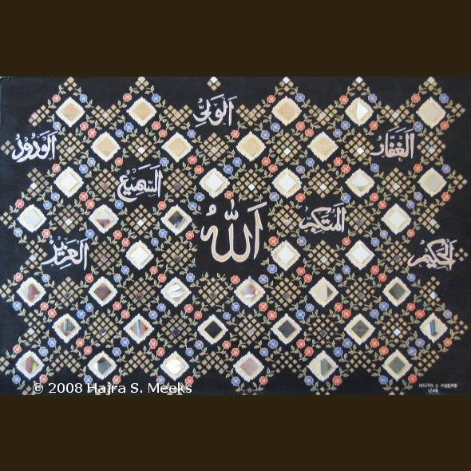

This Mughal-inspired, mixed media piece is one of the works to be displayed during Michelle's visit.
The university library has confirmed that Hajra will get a wall to exhibit her art during the First Lady’s visit to UC Merced. It’ll be located on the third floor of Kolligian library and the exhibit will remain up throughout the summer. While Hajra’s work includes many secular pieces, notably those used in the posters for Son of the Great River, she also produces beautiful calligraphy and art inspired by the techniques of the Islamic Golden Age. If you feel a limited edition, signed giclee print is a little too pricey, you can pick up a less expensive print at RedBubble. There’s really no way to make a print of the mixed media pieces, but if you have $5000 burning a hole in your pocket or you recognize that it’s a paltry sum given the rising popularity of Islamic art, you can own an original.
This entry was posted on Tuesday, April 21st, 2009 at 8:27 AM and is filed under Art, Events. You can follow any responses to this entry through the RSS 2.0 feed. Both comments and pings are currently closed.